PASS 4.14% generated-content-before-block · before-display-blockGeometryShiftmissing 0.2%extra 0.2%ΔE 5.6shift (0.0,1.3)px
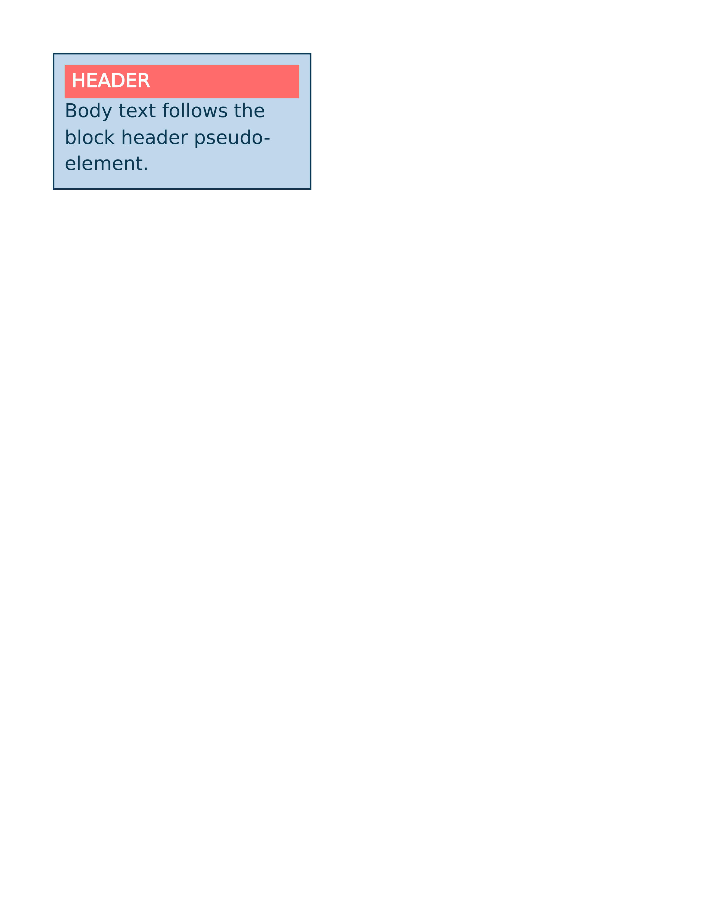
Chrome ref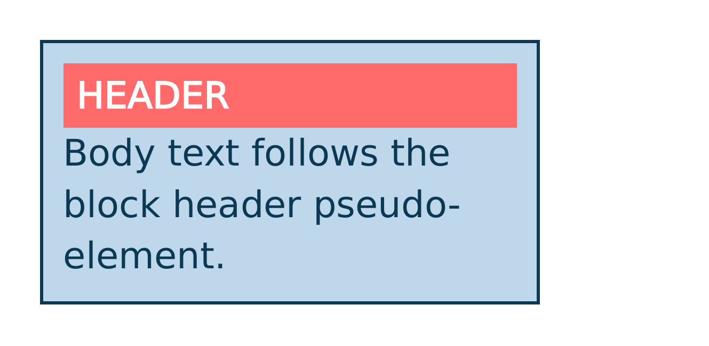
ironpress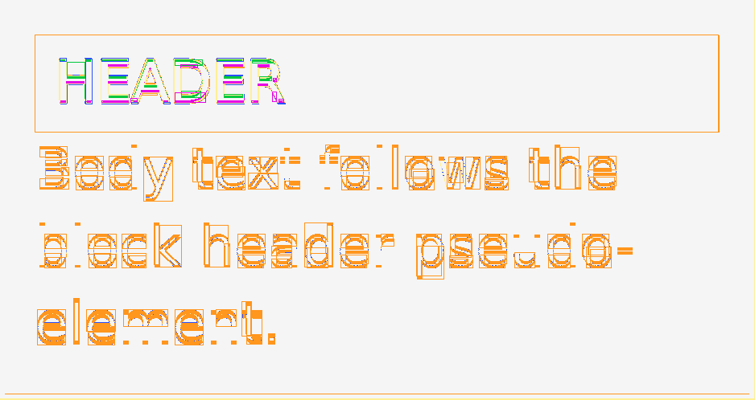
classed diffdiff colours:MissingExtraColorErrGeomShiftAA edgeMatchAA / edge-jitter = cross-rasterizer measurement ceiling, not a bug.
why: content shifted (0.0,1.3)px beyond page-origin calibration
::before with display:block renders a full-width colored header band above the body text.
regions (6)
| class | bbox (CSS px) | area% | magnitude | reason |
|---|
| GeometryShift | 15,123 → 26,137 | 0.21 | ΔRGB(20,18,17) shift(-0.0,0.6) | content shifted (-0.0,0.6)px beyond page-origin calibration |
| GeometryShift | 35,123 → 46,137 | 0.21 | ΔRGB(20,18,17) shift(-0.0,0.6) | content shifted (-0.0,0.6)px beyond page-origin calibration |
| GeometryShift | 69,123 → 81,137 | 0.21 | ΔRGB(20,18,17) shift(-0.0,0.6) | content shifted (-0.0,0.6)px beyond page-origin calibration |
| GeometryShift | 14,53 → 286,53 | 0.18 | shift(0.0,-0.3) | content shifted (0.0,-0.3)px beyond page-origin calibration |
| GeometryShift | 49,123 → 67,130 | 0.12 | ΔRGB(14,13,12) shift(-0.0,0.7) | content shifted (-0.0,0.7)px beyond page-origin calibration |
| GeometryShift | 99,63 → 110,75 | 0.08 | ΔRGB(-9,-8,-8) shift(0.0,0.4) | content shifted (0.0,0.4)px beyond page-origin calibration |
source · cases/generated-content/generated-content-before-block.html
1<!DOCTYPE html>
2<html lang="en">
3<head>
4<meta charset="utf-8">
5<title>before display block</title>
6<style>
7 @page { size: 425px 208px; margin: 0; }
8 html { font-family: ParitySans; line-height: 1.5; }
9 * { margin: 0; box-sizing: border-box; }
10 html, body { background: #ffffff; }
11 .card {
12 width: 300px;
13 margin: 24px;
14 padding: 12px;
15 border: 2px solid #0b3954;
16 background: #bfd7ea;
17 font-family: ParitySans;
18 font-size: 22px;
19 line-height: 1.4;
20 color: #0b3954;
21 }
22 .card::before {
23 content: "HEADER";
24 display: block;
25 background: #ff6b6b;
26 color: #ffffff;
27 padding: 4px 8px;
28 font-weight: bold;
29 }
30</style>
31</head>
32<body>
33 <div class="card">Body text follows the block header pseudo-element.</div>
34</body>
35</html>
PASS 2.81% generated-content-before-decorative-box · before-empty-decorative-boxGeometrySize+0.6px BΔE 4.9shift (0.0,1.1)px
Chrome ref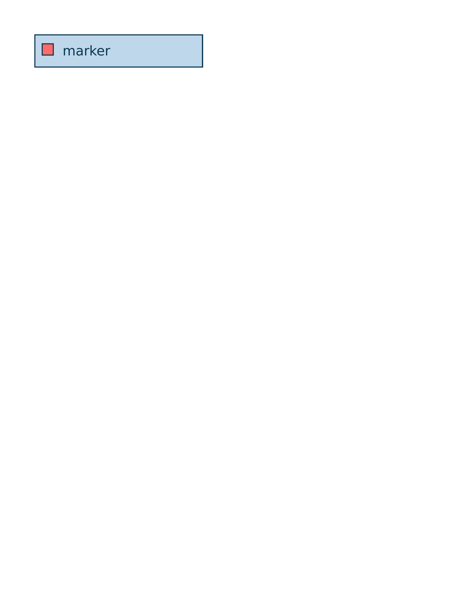
ironpress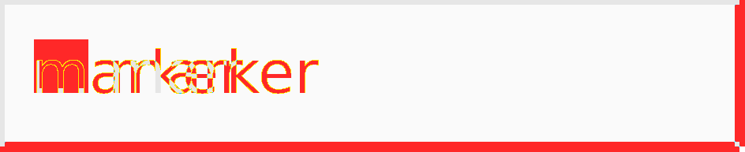
classed diff diff colours:MissingExtraColorErrGeomShiftAA edgeMatchAA / edge-jitter = cross-rasterizer measurement ceiling, not a bug.
why: box +0.6px on bottom edge (size/box-model mismatch)
content: "" with display:inline-block renders an empty ::before as a filled, bordered marker box before the text.
regions (6)
| class | bbox (CSS px) | area% | magnitude | reason |
|---|
| GeometrySize | 2,60 → 298,60 | 0.51 | shift(0.0,-0.3) | box +0.6px on bottom edge (size/box-model mismatch) |
| GeometrySize | 68,24 → 80,39 | 0.43 | ΔRGB(14,12,11) shift(0.0,0.6) | box +0.6px on bottom edge (size/box-model mismatch) |
| GeometrySize | 106,32 → 118,39 | 0.27 | ΔRGB(-20,-18,-17) shift(-0.0,0.6) | box +0.6px on bottom edge (size/box-model mismatch) |
| GeometrySize | 48,24 → 65,31 | 0.26 | ΔRGB(-10,-9,-8) shift(-0.0,0.6) | box +0.6px on bottom edge (size/box-model mismatch) |
| GeometrySize | 96,25 → 105,39 | 0.26 | ΔRGB(14,12,12) shift(-0.1,0.4) | box +0.6px on bottom edge (size/box-model mismatch) |
| GeometrySize | 106,24 → 118,31 | 0.24 | ΔRGB(21,18,17) shift(0.0,0.7) | box +0.6px on bottom edge (size/box-model mismatch) |
source · cases/generated-content/generated-content-before-decorative-box.html
1<!DOCTYPE html>
2<html lang="en">
3<head>
4<meta charset="utf-8">
5<title>before decorative box</title>
6<style>
7 @page { size: 425px 110px; margin: 0; }
8 html { font-family: ParitySans; line-height: 1.5; }
9 * { margin: 0; box-sizing: border-box; }
10 html, body { background: #ffffff; }
11 .row {
12 width: 300px;
13 margin: 24px;
14 padding: 12px;
15 border: 2px solid #0b3954;
16 background: #bfd7ea;
17 font-family: ParitySans;
18 font-size: 24px;
19 line-height: 1.4;
20 color: #0b3954;
21 }
22 .item::before {
23 content: "";
24 display: inline-block;
25 width: 18px;
26 height: 18px;
27 margin-right: 8px;
28 background: #ff6b6b;
29 border: 2px solid #0b3954;
30 }
31</style>
32</head>
33<body>
34 <div class="row"><span class="item">marker</span></div>
35</body>
36</html>
PASS 2.78% generated-content-before-string · before-content-stringGeometryShift+0.3px BΔE 5.7shift (0.0,0.6)px
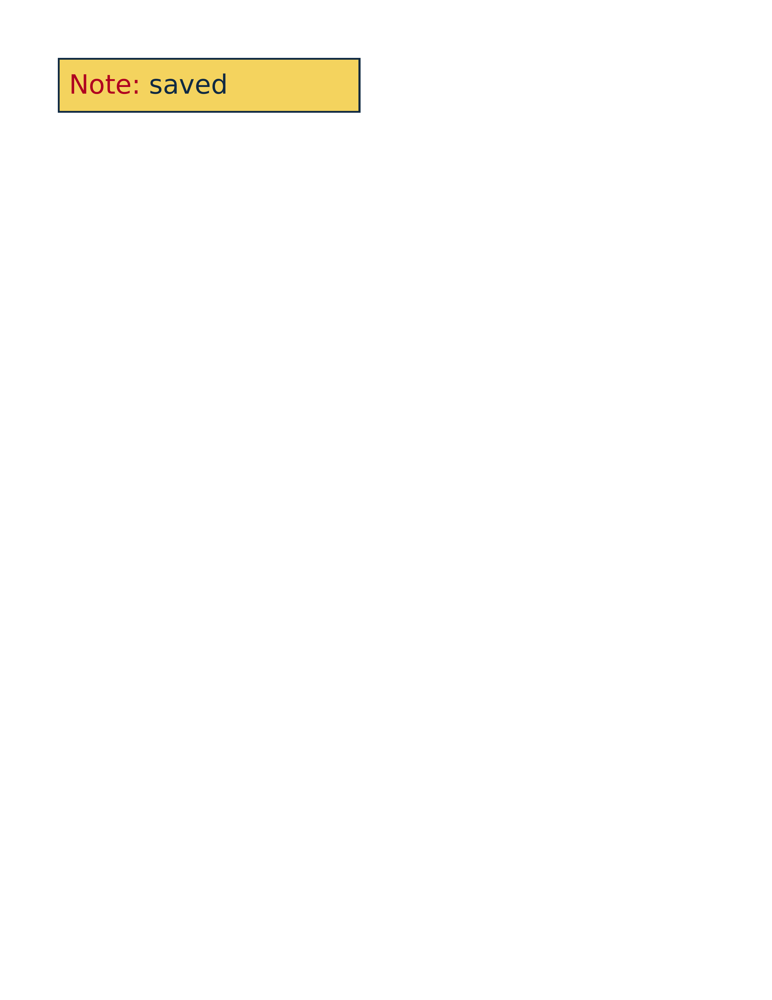
Chrome refironpress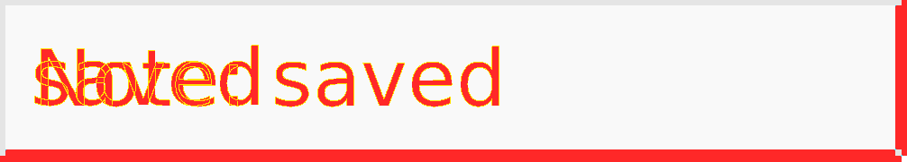
classed diffdiff colours:MissingExtraColorErrGeomShiftAA edgeMatchAA / edge-jitter = cross-rasterizer measurement ceiling, not a bug.
why: content shifted (0.0,0.6)px beyond page-origin calibration
::before inserts a literal red string in front of the element text inside a filled, bordered box.
regions (6)
| class | bbox (CSS px) | area% | magnitude | reason |
|---|
| GeometryShift | 2,56 → 318,56 | 0.55 | shift(0.0,-0.3) | content shifted (0.0,-0.3)px beyond page-origin calibration |
| GeometryShift | 149,30 → 160,36 | 0.12 | ΔRGB(-9,-7,-1) shift(-0.0,0.5) | content shifted (-0.0,0.5)px beyond page-origin calibration |
| GeometryShift | 146,22 → 160,29 | 0.07 | ΔRGB(17,13,2) shift(0.0,0.5) | content shifted (0.0,0.5)px beyond page-origin calibration |
| GeometryShift | 34,33 → 48,39 | 0.07 | ΔRGB(-8,-24,-7) shift(-0.0,0.5) | content shifted (-0.0,0.5)px beyond page-origin calibration |
| GeometryShift | 62,22 → 76,28 | 0.06 | ΔRGB(4,11,4) shift(-0.0,0.5) | content shifted (-0.0,0.5)px beyond page-origin calibration |
| GeometryShift | 129,22 → 138,38 | 0.06 | ΔRGB(-27,-20,-3) shift(-0.0,0.5) | content shifted (-0.0,0.5)px beyond page-origin calibration |
source · cases/generated-content/generated-content-before-string.html
1<!DOCTYPE html>
2<html lang="en">
3<head>
4<meta charset="utf-8">
5<title>before content string</title>
6<style>
7 @page { size: 445px 106px; margin: 0; }
8 html { font-family: ParitySans; line-height: 1.5; }
9 * { margin: 0; box-sizing: border-box; }
10 html, body { background: #ffffff; }
11 .box {
12 width: 320px;
13 margin: 24px;
14 padding: 10px;
15 border: 2px solid #102a43;
16 background: #f4d35e;
17 font-family: ParitySans;
18 font-size: 28px;
19 line-height: 1.2;
20 color: #102a43;
21 }
22 .label::before {
23 content: "Note: ";
24 color: #b00020;
25 }
26</style>
27</head>
28<body>
29 <div class="box"><span class="label">saved</span></div>
30</body>
31</html>
PASS 2.57% generated-content-after-string · after-content-stringGeometryShift+0.3px BΔE 5.2shift (0.0,0.6)px
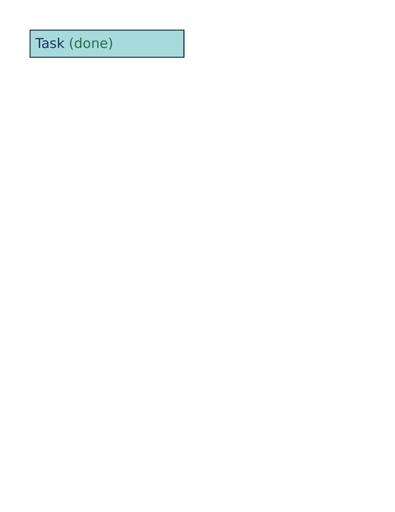
Chrome refironpress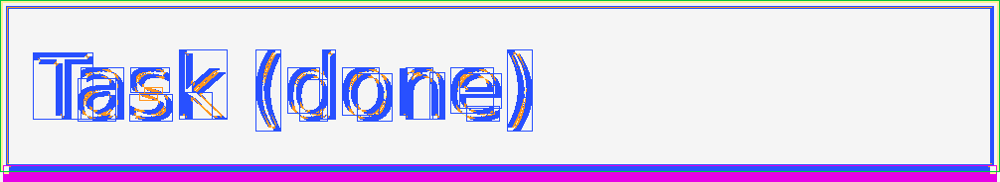
classed diffdiff colours:MissingExtraColorErrGeomShiftAA edgeMatchAA / edge-jitter = cross-rasterizer measurement ceiling, not a bug.
why: content shifted (0.0,0.6)px beyond page-origin calibration
::after appends a literal string after the element text inside a filled, bordered box.
regions (6)
| class | bbox (CSS px) | area% | magnitude | reason |
|---|
| GeometryShift | 2,56 → 318,56 | 0.55 | shift(0.0,-0.3) | content shifted (0.0,-0.3)px beyond page-origin calibration |
| GeometryShift | 61,22 → 72,38 | 0.18 | ΔRGB(-7,-8,-6) shift(-0.0,0.4) | content shifted (-0.0,0.4)px beyond page-origin calibration |
| GeometryShift | 112,33 → 125,39 | 0.06 | ΔRGB(-17,-14,-19) shift(-0.0,0.5) | content shifted (-0.0,0.5)px beyond page-origin calibration |
| GeometryShift | 12,17 → 29,18 | 0.06 | ΔRGB(22,26,20) shift(0.0,0.6) | content shifted (0.0,0.6)px beyond page-origin calibration |
| GeometryShift | 147,22 → 160,27 | 0.06 | ΔRGB(14,12,16) shift(0.0,0.5) | content shifted (0.0,0.5)px beyond page-origin calibration |
| GeometryShift | 113,22 → 125,28 | 0.06 | ΔRGB(14,12,16) shift(-0.0,0.5) | content shifted (-0.0,0.5)px beyond page-origin calibration |
source · cases/generated-content/generated-content-after-string.html
1<!DOCTYPE html>
2<html lang="en">
3<head>
4<meta charset="utf-8">
5<title>after content string</title>
6<style>
7 @page { size: 445px 106px; margin: 0; }
8 html { font-family: ParitySans; line-height: 1.5; }
9 * { margin: 0; box-sizing: border-box; }
10 html, body { background: #ffffff; }
11 .box {
12 width: 320px;
13 margin: 24px;
14 padding: 10px;
15 border: 2px solid #102a43;
16 background: #a8dadc;
17 font-family: ParitySans;
18 font-size: 28px;
19 line-height: 1.2;
20 color: #1d3557;
21 }
22 .label::after {
23 content: " (done)";
24 color: #2a6f4d;
25 }
26</style>
27</head>
28<body>
29 <div class="box"><span class="label">Task</span></div>
30</body>
31</html>
PASS 1.79% generated-content-after-replaced · after-on-replaced-imgGeometryShift+1.0px Bmissing 0.5%shift (0.0,-0.6)px
Chrome ref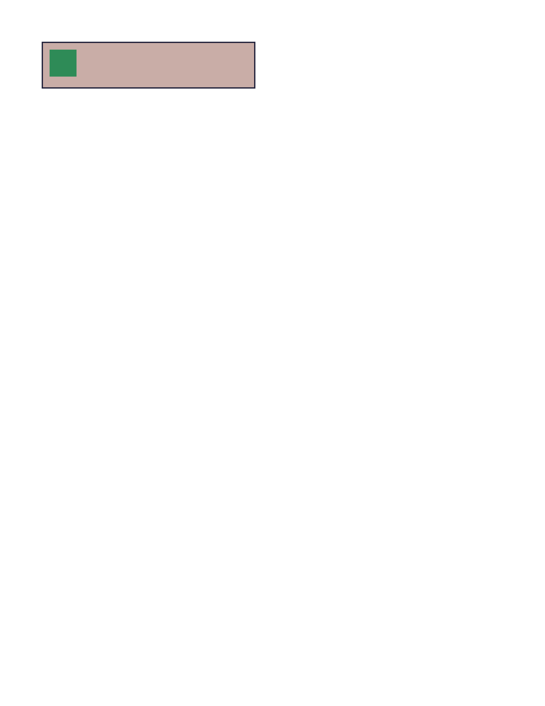
ironpress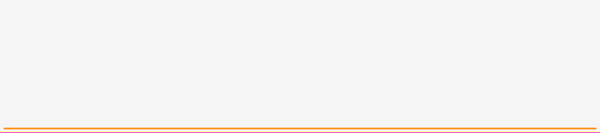
classed diff diff colours:MissingExtraColorErrGeomShiftAA edgeMatchAA / edge-jitter = cross-rasterizer measurement ceiling, not a bug.
why: content shifted (0.0,-0.6)px beyond page-origin calibration
::after on a replaced <img> generates no box; only the image renders.
regions (2)
| class | bbox (CSS px) | area% | magnitude | reason |
|---|
| GeometryShift | 2,68 → 318,69 | 1.34 | shift(0.0,-0.6) | content shifted (0.0,-0.6)px beyond page-origin calibration |
| Missing | 0,71 → 320,71 | 0.45 | | content clipped/truncated (0.5% missing) |
source · cases/generated-content/generated-content-after-replaced.html
1<!DOCTYPE html>
2<html lang="en">
3<head>
4<meta charset="utf-8">
5<title>after on replaced element not generated</title>
6<style>
7 @page { size: 445px 119px; margin: 0; }
8 html { font-family: ParitySans; line-height: 1.5; }
9 * { margin: 0; box-sizing: border-box; }
10 html, body { background: #ffffff; }
11 .box {
12 width: 320px;
13 margin: 24px;
14 padding: 10px;
15 border: 2px solid #22223b;
16 background: #c9ada7;
17 font-family: ParitySans;
18 font-size: 26px;
19 line-height: 1.2;
20 color: #22223b;
21 }
22 .pic { width: 40px; height: 40px; }
23 /* On a replaced element (img), ::after generates no box. */
24 .pic::after { content: "X"; color: #b00020; }
25</style>
26</head>
27<body>
28 <div class="box"><img class="pic" alt="" src="data:image/png;base64,iVBORw0KGgoAAAANSUhEUgAAABgAAAAYCAIAAABvFaqvAAAAH0lEQVR4nGPQ6w6nCmIYNWjUoFGDRg0aNWjUoIE3CABVSmQfiLHieQAAAABJRU5ErkJggg=="></div>
29</body>
30</html>